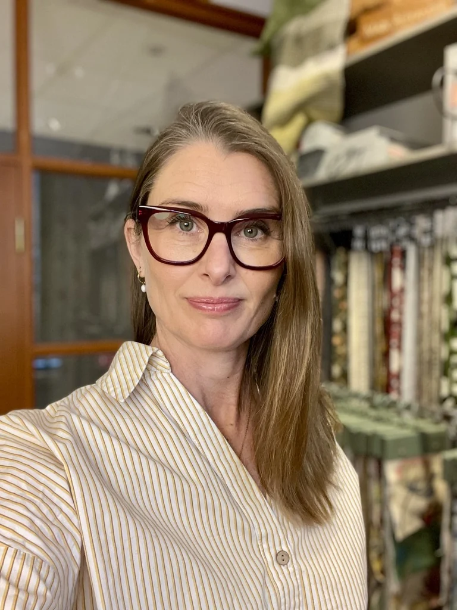
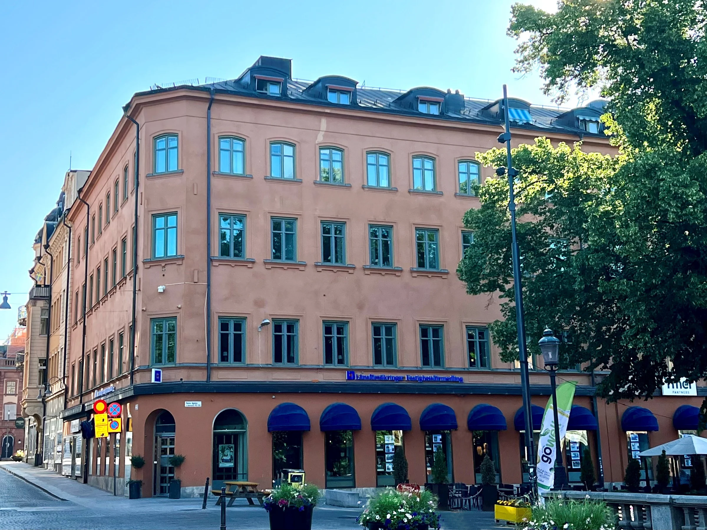
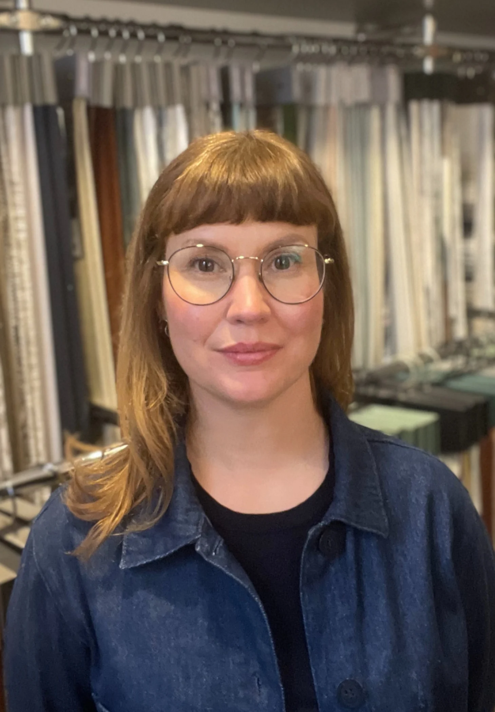
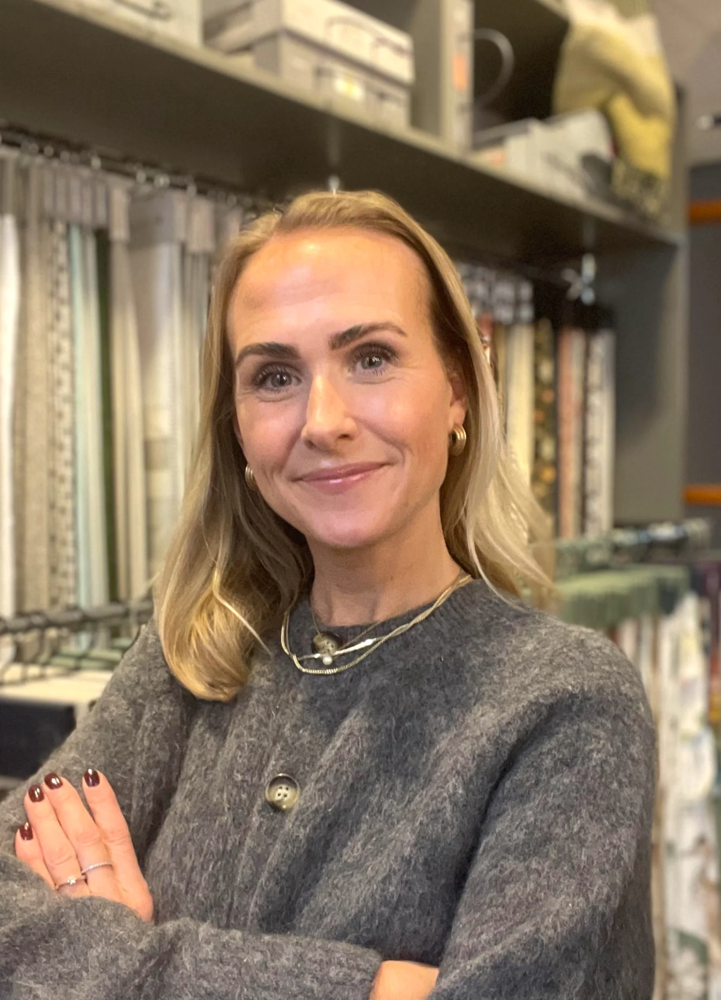
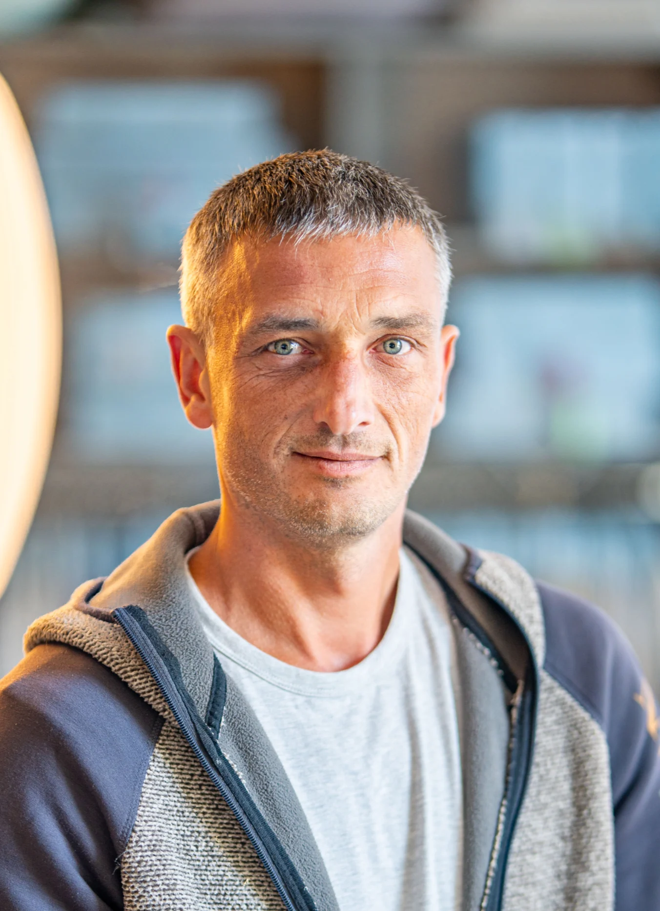

Johanna Bric Post
Inredare & ägareMedgrundare 2004, med bakgrund inom sömnad och tapetsering. Hantverket och det egna skapandet präglar hennes arbete.
Inredning, sömnad och snickeri. Olika händer, samma känsla för helheten.

Vi utgår från din vardag, dina önskemål och det du redan tycker om. Med kulörer, material, ljus och hantverk skapar vi personliga miljöer för hem och företag i Mälardalen.
Vi ser gärna förbi korta trender. Det viktigaste är att du känner igen dig – och vill stanna kvar.

Medgrundare 2004, med bakgrund inom sömnad och tapetsering. Hantverket och det egna skapandet präglar hennes arbete.

Började som sömmerska 2008 och blev delägare 2016. Tycker om att lösa kluriga planlösningar och förena funktion med personlighet.

En del av LivingIn sedan 2017. Arbetar främst med styling och blandar gärna äldre fynd med nya detaljer.

Har arbetat med LivingIn sedan 2010, efter tidigare arbete med fönster- och trappsnickerier i Lettland.
Ett första möte om behov, önskemål och budget. Vi mäter vid behov.
Du får en prisindikation. Sedan tar vi fram ritningar, färger och material.
När förslaget är godkänt kommer vi överens om offert och tidsplan.
8 recensioner på Google
Ett rum, ett hem eller en helt ny arbetsplats.
Berätta vad du har i tankarna.